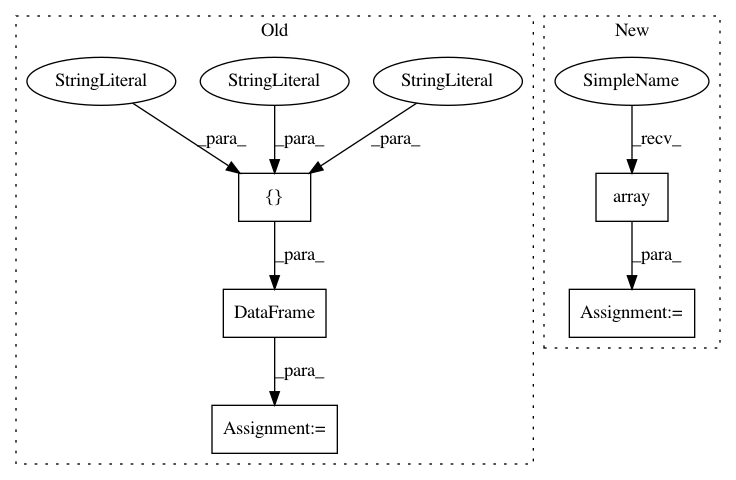

4163c4eb8cffd43b05931100fa2dd807a3b19fbb,examples/utils/tf_records_generation.py,,main,#,97
Before Change
tf_tiles_info.append(y)
//train_len = 0.8
split_index = int(len(tf_tiles_info) *0.8 )
column_name = ["filename", "width", "height", "class", "xmin", "ymin", "xmax", "ymax"]
df = pd.DataFrame(tf_tiles_info, columns=column_name)
//shuffle the dataframe
df = df.sample(frac=1)
train_df = df[:split_index]
test_df = df[split_index:]
print("You have {} training tiles and {} test tiles ready".format(
len(set(train_df["filename"])), len(set(test_df["filename"]))))
// train_df.to_csv("train_df.csv")
// test_df.to_csv("test_df.csv")
tiles_dir = op.join(os.getcwd(), "tiles")
train_dir = op.join(os.getcwd(), "images", "train")
test_dir = op.join(os.getcwd(), "images", "test")
if not op.isdir(train_dir):
makedirs(train_dir)
if not op.isdir(test_dir):
makedirs(test_dir)
for tile in train_df["filename"]:
tile_dir = op.join(tiles_dir, tile)
shutil.copy(tile_dir, train_dir)
for tile in test_df["filename"]:
tile_dir = op.join(tiles_dir, tile)
shutil.copy(tile_dir, test_dir)
////// for train
writer = tf.python_io.TFRecordWriter(FLAGS.train_rd_path)
grouped = split(train_df, "filename")
for group in grouped:
tf_example = create_tf_example(group, train_dir)
writer.write(tf_example.SerializeToString())
writer.close()
output_train= op.join(os.getcwd(),FLAGS.train_rd_path)
print("Successfully created the TFRecords: {}".format(output_train))
After Change
y = ["{}.jpg".format(tile), width, height, cl_str, bbox[0], bbox[1], bbox[2], bbox[3]]
tf_tiles_info.append(y)
//train_len = 0.8
tf_array = np.array(tf_tiles_info)
split_index = int(len(tf_tiles_info) *0.8 )
tf_train = tf_array[0: split_index]
tf_test = tf_array[split_index, :]
print("You have {} training tiles and {} test tiles ready".format(
len(set(list(tf_train[:,1]))), len(set(list(tf_test[:,1])))))
tiles_dir = op.join(os.getcwd(), "tiles")
In pattern: SUPERPATTERN
Frequency: 3
Non-data size: 5
Instances
Project Name: developmentseed/label-maker
Commit Name: 4163c4eb8cffd43b05931100fa2dd807a3b19fbb
Time: 2018-01-26
Author: geospatialanalystyi@gmail.com
File Name: examples/utils/tf_records_generation.py
Class Name:
Method Name: main
Project Name: EducationalTestingService/factor_analyzer
Commit Name: c319bb5acd058333da904d6a7fb08c7fda64813c
Time: 2019-04-02
Author: jbiggs@ets.org
File Name: tests/test_factor_analyzer.py
Class Name:
Method Name: test_calculate_kmo
Project Name: EducationalTestingService/factor_analyzer
Commit Name: c319bb5acd058333da904d6a7fb08c7fda64813c
Time: 2019-04-02
Author: jbiggs@ets.org
File Name: tests/test_factor_analyzer.py
Class Name: TestFactorAnalyzer
Method Name: test_smc_is_r_squared